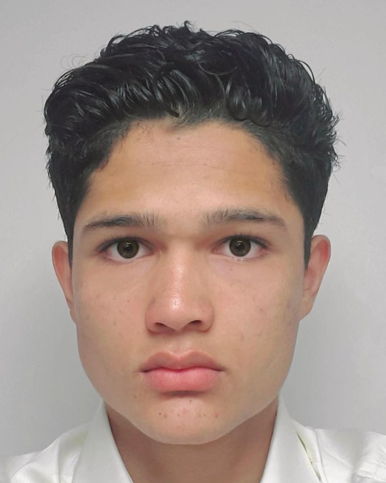

Eliya Amro
I'm a Computer Engineering student at Istanbul Technical University on the Türkiye Bursları merit scholarship. I build with C, Python and JavaScript, and I'm most curious about the point where code meets real, physical hardware. That curiosity started with a TÜBİTAK drone project in high school, and it's what I'm working toward today.

- ITU Computer Engineering
- YTB Merit Scholar
- ATP Tech Intern 2026
- 3 languages spoken
- Bridge for Africa Co-founder
Engineering, from the code to the circuit
My degree covers both sides of computing, and I enjoy both: writing the logic, and understanding the hardware it runs on.
Software
I program in C and Python for coursework and problem solving, and I use HTML, CSS and JavaScript to build for the web, including this site.
Hardware & logic
I'm studying digital logic design and electrical circuit analysis, building the foundation I need to work with embedded systems and innovative hardware components.
Real-world systems
At ATP Tech I worked hands-on with Zenia ECPOS, a live point-of-sale and kitchen display platform, configuring it from the back office to the terminals.
On my desk this semester
The courses building my foundations in hardware and engineering math.
Digital Circuits
Boolean algebra, logic minimization, and combinational and sequential circuit design: the building blocks of every processor.
Basics of Electrical Circuits
Circuit laws, node and mesh analysis, and the behavior of resistive and reactive circuits, the physics underneath the logic.
Probability & Statistics
Random variables, distributions and statistical inference: the math behind reliable systems, signals and data.
Get to know me
About
My background, heritage, and the places that shaped me.
Experience
Education, internship, technical skills and leadership.
Projects
Engineering and research work, from drones to the web.
Initiatives
Bridge for Africa, plus mentoring students on SAT, TOEFL and scholarships.
Looking for an internship, a collaborator, or advice on scholarships?
I'm open to engineering internships and technical collaborations, and I'm always happy to help students with SAT, TOEFL and Türkiye Bursları applications.